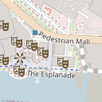
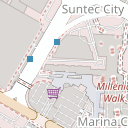
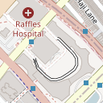
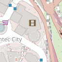

파울라너 브로이하우스 영업 미확인
밀레니아워크
월–목 11:00–00:00 / 금·토 11:00–01:00 / 일 11:00–00:00구글 07/28 확인
92점
전화로 미리 예약하세요. 워크인 가능. +65 6592 7912
- 층별 마감
- 2층 23:00 · 1층 24:00 식사까지 하려면 2층, 술만 하려면 1층이에요
저녁에 다른 데가 당기면 여기서 골라 길찾기로 바로 열어요. 경로는 방금 보던 일정의 직전 장소에서 출발해요.
숙소 밖이라 그랩이나 택시로 나가야 해요.
밀레니아워크
월–목 11:00–00:00 / 금·토 11:00–01:00 / 일 11:00–00:00구글 07/28 확인
전화로 미리 예약하세요. 워크인 가능. +65 6592 7912

원 풀러턴
매일 12:00–14:30, 17:30–22:30구글 07/28 확인
전화로 미리 예약하세요. +65 6336 8118 또는 SevenRooms 온라인. 좌석 지정 불가, 15분 초과 지각 시 취소

선텍시티
월–목 11:00–21:00 / 금 11:00–21:30 / 토 10:30–21:30 / 일 10:30–21:00구글 07/28 확인
예약 없이 가도 돼요.
싱가포르에 13개 지점이 있어요. 걸어서 갈 수 있는 곳은 선텍시티 지하 1층 B1-132이고, 뉴브리지로드 17번지 지점은 월요일에 쉬어요.

마리나베이 파이낸셜센터
매일 12:00–23:00구글 07/28 확인
온라인으로 미리 예약하세요. 신용카드 보증 필수. 테라스는 보증금 S$50과 1인 최소 소비 S$100
예약 없이 가도 돼요.
일요일에는 쉬고 평일에도 점심과 저녁 사이에 문을 닫아요. 아모이스트리트 호커센터 자체가 주말에는 대부분 쉽니다.

센토사 실로소 비치
월–목 12:00–21:00 / 금–일 11:00–22:00구글 07/28 확인
전화로 미리 예약하세요. +65 6376 2662. 야외 화덕이라 우천 시 좌석 조정

에스플러네이드
월–목 16:00–23:00 / 금·토 16:00–23:30 / 일 15:00–23:00구글 07/28 확인
예약 없이 가도 돼요.
밤 11시에 닫고 라스트오더는 10시 반이에요. 예약 사이트마다 새벽 2시까지라고 적혀 있지만 공식 안내는 11시입니다.
예약 없이 가도 돼요.
예약 없이 가도 돼요.
조용히 앉으려면
화요일부터 토요일까지는 밤 9시가 넘으면 라이브 공연으로 소리가 커져요. 이야기를 나누려면 9시 전에 자리를 잡으세요.
예약 없이 가도 돼요.
같은 자리에 있던 코피티암은 문을 닫았어요. 지하 1층 푸드리퍼블릭이 지금의 푸드코트입니다.

차이나타운
매일 08:00–22:00구글 07/28 확인
예약 없이 가도 돼요.
간판 격인 티엔티엔 치킨라이스가 월요일에 쉬어요. 마감 시각은 저녁 7시 반과 9시로 출처가 갈립니다.
예약 없이 가도 돼요. 술탄 모스크 맞은편

밀레니아워크
월 휴무일 / 화·수 12:30–15:00, 19:00–22:30 / 목 19:00–22:30 / 금–일 12:30–15:00, 19:00–22:30구글 07/28 확인
예약 없이 가도 돼요.
예약 없이 가도 돼요.
전화로 미리 예약하세요. +65 9834 9935 또는 eat@violetoon.com
예약 없이 가도 돼요.
월요일에는 쉬어요. 공휴일이 겹치면 열기도 하니 월요일에 가려면 그날 아침에 확인하세요.
온라인으로 미리 예약하세요. inline 온라인 예약은 평일 11:00–19:30만 접수
예약 없이 가도 돼요.
노천 사테 거리는 평일 저녁 7시에 문을 열어요. 8월 7일은 저녁 7시 40분에 공항으로 떠나는 날이라 그날은 어려워요.

부기스 파크뷰스퀘어
월 15:00–00:00 / 화–목 12:00–00:00 / 금·토 12:00–02:00 / 일 휴무일구글 07/28 확인
전화로 미리 예약하세요. +65 6396 4466 또는 info@atlasbar.sg. 카드 보증 필요, 워크인 좌석 일부 선착순
일요일에는 쉬어요. 저녁 5시가 지나면 드레스코드가 있어서 남성은 긴바지와 발등이 덮인 신발이 필요해요.
예약 없이 가도 돼요.
일요일에는 쉬고 평일에도 저녁 6시 반에 닫아요. 점심으로만 갈 수 있는 곳이에요.
예약 없이 가도 돼요.
간판 격인 No.1 Adam's 나시르막이 화요일에 쉬어요. 셀레라 라사 나시르막은 월요일부터 목요일까지 저녁 5시까지 열어요.

선텍시티
월–목 11:00–22:00 / 금 11:00–23:00 / 토 10:00–23:00 / 일 10:00–22:00구글 07/28 확인
온라인으로 미리 예약하세요. Quandoo 예약 가능
예약 없이 가도 돼요.
64년 동안 화요일에 쉬다가 2026년 1월부터 연중무휴로 바뀌었는데, 공식 안내에는 화요일 휴무라는 옛 문구가 그대로 남아 있어요. 8월 4일이 화요일이니 나서기 전에 지도 앱에서 문 여는지 확인하세요.
예약 없이 가도 돼요.
예약 없이 가도 돼요.
미쉐린으로 알려진 호커찬은 일요일에 쉬고 평일에도 오후 3시 반에 닫아요. 점심으로만 갈 수 있어요.

오차드
매일 10:00–22:00구글 07/28 확인
예약 없이 가도 돼요.
숙소에서 받는 곳이라 경로 대신 검색으로 확인해요.
배달
예약 없이 가도 돼요. 주소는 Pan Pacific Singapore, 7 Raffles Boulevard. 메모에 Meet at hotel lobby
라이더는 객실까지 올라오지 못해요. 로비에서 받고 도착 채팅에 답하세요.